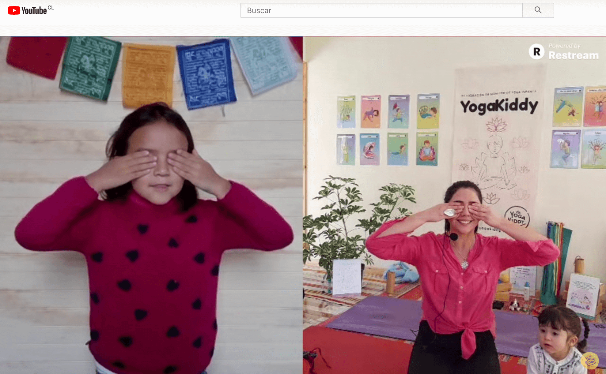

Este fin de semana celebramos el Día Internacional del Yoga y comenzamos el sábado con una clase de “Yoga para la Familia” junto a Madhu, su hija Munay y Luz.
Para quienes no alcanzaron a verla en directo, aquí les compartimos la clase completa para que puedan disfrutarla en familia.
Un abrazo y gracias por acompañarnos,
Carmen ✨